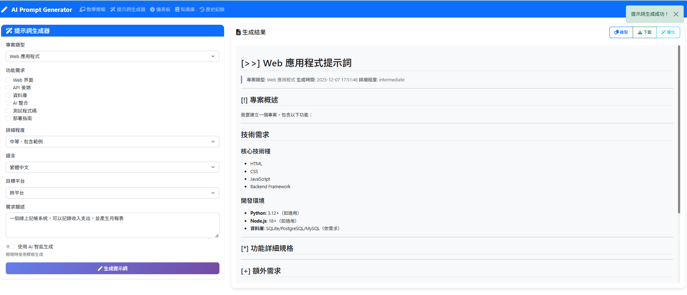

問卷設計邏輯、模板系統與 AI 智能生成實作
PROJECT_TYPES = {
'web_app': {
'name': 'Web 應用程式',
'tech_stack': ['HTML', 'CSS', 'JavaScript', 'Backend Framework'],
'sections': ['UI/UX 設計', '前端實作', '後端 API', '資料庫設計', '部署']
},
'cli_tool': {
'name': '命令列工具',
'tech_stack': ['Python/Node.js', 'argparse/commander'],
'sections': ['指令設計', '參數處理', '輸出格式', '錯誤處理']
}
}
DETAIL_LEVELS = {
'basic': {'depth': 1, 'include_examples': False},
'intermediate': {'depth': 2, 'include_examples': True},
'detailed': {'depth': 3, 'include_examples': True},
'comprehensive': {'depth': 4, 'include_examples': True}
}class AIService:
def generate_prompt(self, requirements: Dict, provider: str) -> str:
"""生成提示詞 - 統一接口"""
prompt = self._build_generation_prompt(requirements)
if provider == 'openai' and self.openai_client:
return self._generate_with_openai(prompt)
elif provider == 'gemini' and self.gemini_model:
return self._generate_with_gemini(prompt)
def optimize_prompt(self, original: str, provider: str) -> Dict:
"""優化提示詞 - 返回優化版本與建議"""
optimization_prompt = f"""
分析以下提示詞的品質，提供：
1. 優化後的版本
2. 具體改進建議
原始提示詞：
{original}
"""
# 呼叫 AI 進行分析.../api/optimize